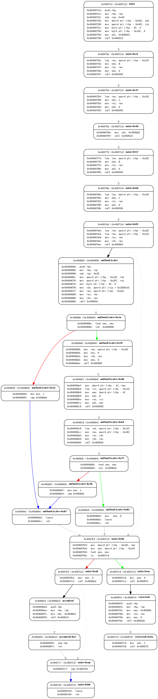

angr是一个多架构的二进制分析平台，能够执行动态符号执行（就像Mayhem，KLEE等）以及多种二进制文件静态分析。
Quick Start
1 | sudo pip install angr |
Modules
CLE is an extensible binary loader. Its main goal is to take an executable program and any libraries it depends on and produce an address space where that program is loaded and ready to run.
PyVEX provides an interface that translates binary code into the VEX intermediate represenation (IR). For an introduction to VEX, take a look here: https://docs.angr.io/docs/ir.html
claripy, you should never have to work with in-depth claripy APIs unless you’re doing some hard-core analysis. Most of the time, you’ll be using claripy as a simple frontend to z3
archinfo is a collection of classes that contain architecture-specific information. It is useful for cross-architecture tools (such as pyvex).
官方Toy Code
Control-flow graph recovery
fauxware1
2
3
4
5
6
7
8
9
10
11
12
13
14
15
16
17
18
19
20
21
22
23
24
25
26
27
28
29
30
31
32
33
34
35
36
37
38In [1]: import angr
In [2]: proj = angr.Project('./fauxware',auto_load_libs=False)
In [3]: cfg = proj.analyses.CFG()
In [4]: dict(proj.kb.functions)
Out[4]:
{4195552: <Function _init (0x4004e0)>,
4195584: <Function sub_400500 (0x400500)>,
4195600L: <Function puts (0x400510)>,
4195616L: <Function printf (0x400520)>,
4195632L: <Function read (0x400530)>,
4195648L: <Function __libc_start_main (0x400540)>,
4195664L: <Function strcmp (0x400550)>,
4195680L: <Function open (0x400560)>,
4195696L: <Function exit (0x400570)>,
4195712: <Function _start (0x400580)>,
4195753L: <Function sub_4005a9 (0x4005a9)>,
4195756: <Function call_gmon_start (0x4005ac)>,
4195792: <Function __do_global_dtors_aux (0x4005d0)>,
4195904: <Function frame_dummy (0x400640)>,
4195940: <Function authenticate (0x400664)>,
4196077: <Function accepted (0x4006ed)>,
4196093: <Function rejected (0x4006fd)>,
4196125: <Function main (0x40071d)>,
4196320: <Function __libc_csu_init (0x4007e0)>,
4196464: <Function __libc_csu_fini (0x400870)>,
4196480: <Function __do_global_ctors_aux (0x400880)>,
4196536: <Function _fini (0x4008b8)>,
16777216L: <Function puts (0x1000000)>,
16777224L: <Function printf (0x1000008)>,
16777232L: <Function read (0x1000010)>,
16777240L: <Function __libc_start_main (0x1000018)>,
16777248L: <Function strcmp (0x1000020)>,
16777256L: <Function open (0x1000028)>,
16777264L: <Function exit (0x1000030)>,
16777328: <Function UnresolvableTarget (0x1000070)>}
补充
class angr.analyses.cfg.cfg.CFG(**kwargs)
CFG is just a wrapper around CFGFast for compatibility issues. It will be fully replaced by CFGFast in future releases. Feel free to use CFG if you intend to use CFGFast. Please use CFGAccurate if you have to use the old, slow, but more accurate version of CFG.
在angr中,CFG有CFGFast和CFGAccurate.很多人喜欢在＂pip install angr＂安装angr之后就立即试用angr的CFG功能，这样开发者决定让CFG作为CFGFast的封装．这两者之间的区别在于CFGAccurate的CFG信息更准确更详细.
下图是CFGAccurate生成的CFG用angr-utils展示出来

Symbolic execution
angr 脚本初体验
实例
https://joyceqiqi.wordpress.com/2017/04/25/%E5%88%A9%E7%94%A8angr%E8%8E%B7%E5%8F%96cfg/